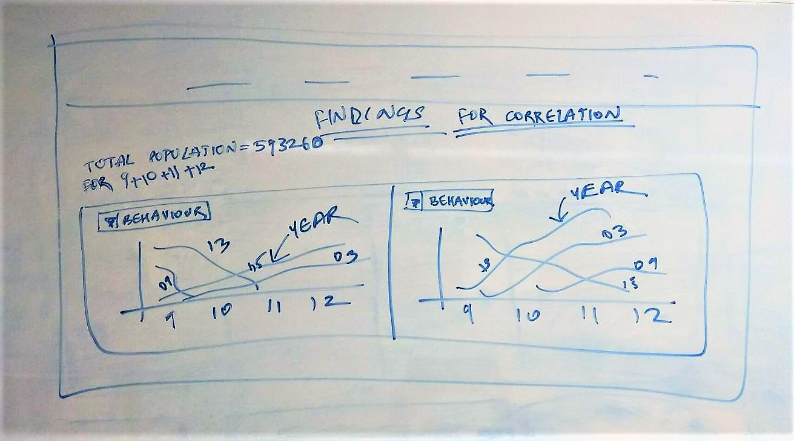

Design Plan

The Design Plan for the project was to have a easy to understand and view the obesity risk level across various behavious in a single webpage which is Colour Blind Safe.
The Page is divided into 8 categories having easy to relate pictures with titles which enables users to choose a particular category easily.
Each category has three links for the user to view and understand the obesity levels through visualization charts for each state for a particularr behaviour.
The Country Wise view allows the users to see the data for the particular behaviour of students across all the states and compare each state with other with the help of pie charts over other states which indicate the percentage of students who share the behaviour.
The pic chart's size varies from state to state as the size factor is dependent on the percentage values of teh latest year which is 2015.
Each Pie Chart has a tool tip which displays the percentage values for the years 2015, 2013, 2013 and 2009. These values are arranged in a decreasing order in the tool tip for the users to understand in which year the behaviour was highest among the students in that state.
The Legend below helps the users to understand the colour shade for each year in the Map.

The Grade Wise view allows the users to see the trend of that particular behaviour for grade wise data across all the states, which can be selected from the state drop down list. The Charts change as per the state selection.
The default chart seen is of the first state to give the users an idea of they can view under grade wise tab of each behaviour.
The two charrts palced adjacent to each other help to identify the trends across each grade and the gender for that particular year.
The Tool Tip provides the exact values of the percentage of students at that point in the charts. The charts are designed to maintain a simplistic view for the user. The line chart displays the trend over the years and the stacked bar chart displays the gender wise data over the years.
The legend below each charts help the user to understand the visualization promptly.

The Ethinicity Wise view allows the users to see the trend of that particular behaviour for ethicity race wise data across all the states, which can be selected from the state drop down list. The Charts change as per the state selection.
The default chart seen is of the first state to give the users an idea of they can view under ethinicity wise tab of each behaviour.
The two charrts palced adjacent to each other help to identify the trends across each race-ethnicity and the gender for that particular year.
The Tool Tip provides the exact values of the percentage of students at that point in the charts. The charts are designed to maintain a simplistic view for the user. The stacked bar chart used to display the ethinicity data helps the users to see the groups of races that share the similar trends over the years and the stacked bar chart displays the gender wise data over the years.
The legend below each charts help the user to understand the visualization promptly.

The Compare Behaviour page helps the users to actually notice trends and compare any two behaviours side by side. The page allows the user to select from two drop down lists to select two behaviours and view the line charts which display the data across years.
The Title and the legend below helps to undertand the visualization.This page allows the users to understand the correlation between two student behaviours and notice the reason behing the particular behaviour of the students for that year.

The Analytical Dashboard allows the users to actually compare all the behaviours at the same time. This is needed as this helps professionals to understand the cause and the effect of a particular student behaviour over the other. The analytical dashboard is designed with a thought to have a one single view of the variation of each of the question over the years for a particular state, category and stratification. The analytical dashboard consist of two sections. The analytic provided is for a particular state, category and Stratification which are to be seleted from a drop down list at the top. On selecting the filters the top section of the dashboard will display across the year barchart trend for all 8 questions. This is a one screen view of time variation of all the 8 questions. Further on click of any particular question the bottom section will display barchart trend for that particular question and for the same filter criteria seleted across all the states for a particular year which can be seleted from a filter in the bottom section.